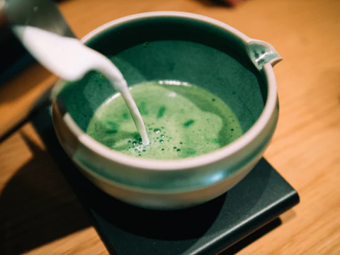

Matcha Latte

Description
A steaming hot matcha latte is a delicious drink that's easy to make at home.
Knowing how to make your own matcha latte not only saves you money but also allows you to control the level of sweetness.
Ingredients
- 1 1/2 teaspoons matcha powder
- 1 tablespoon hot water
- 2 teaspoons honey, or to taste
- 3/4 cup hot milk
- any milk to your taste (oat milk is my fav)
Steps
- sift the matcha powder into a mug
-
add the hot honey and wisk until no lumps remain.
stir it in the honey
-
Add the milk and either wisk to combine or use a milk frother
serve immediately